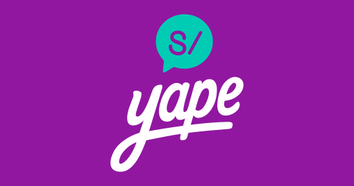

Cómo convertir los documentos de tu empresa en respuestas con fuente, sin que la IA invente. Un caso real: la normativa que rige a minas, plantas y fábricas en el Perú.
Daniel Portugal
Field Engineering Leader · Talento Para Ti
Fundador de Data Wizard|Daniel Datashow
usa ← → para avanzar · clic en las piezas para ver el detalle
Sobre el ponente
Daniel Portugal Revilla
Field Engineering Leader en Talento Para Ti
Fundador de Data Wizard y Data Engineering LATAM
Creador de Daniel Datashow en YouTube y TikTok
Ingeniero de datos con más de 9 años transformando datos en decisiones: arquitecturas lakehouse, streaming en tiempo real y plataformas como Databricks, Snowflake y BigQuery. Bachiller en Ingeniería de Sistemas por la UCSM, Arequipa.
in/danielportugalrdatawizard.tech@DanielDatashow
MI TRAYECTORIA

Talento Para Ti
Sigamos conectados
Encuéntrame en LinkedIn
Daniel Portugal
Partner de Databricks
Talento Para Ti
Datos e inteligencia artificial sobre Databricks, de la arquitectura a la operación
Proyectos de implementación
Llevamos sus casos de uso a producción: migración a Databricks, agentes de IA, machine learning y MLOps, entregados como código.
Entrenamiento
Rutas por perfil y preparación para las certificaciones oficiales de Databricks, con clases en vivo, proyecto real y mentoría.
Staffing especializado
Ingenieros y arquitectos certificados que se suman a su equipo, por proyecto o por horas, con el respaldo de TPT.
Plataforma
· Arquitectura en Databricks
· Integración de fuentes
· Lakehouse por capas
Gobierno y operación
· Gobierno y seguridad con Unity Catalog
· Monitoreo y operación
· Rendimiento y costo
IA y personas
· IA aplicada y RAG
· Machine learning y MLflow
· Formación por perfil
Cómo empezamos
1Diagnóstico de plataforma
2Prueba de concepto en ambiente espejo
3Formación por perfil
4Migración o implementación
El problema
La normativa ya está en tu empresa. Encontrar la respuesta a tiempo, no.
Jefa de seguridad
Unidad minera
¿Sigue vigente este reglamento?
¿Cuál es el límite de plomo en efluentes?
¿Qué nos exige el IPERC?
Normativa Minería Industria25 archivos
Leyes, decretos y reglamentos en PDF. Algunos escaneados, otros de 186 páginas, y uno ya derogado.
Buscar a mano toma horas. Citar la norma equivocada cuesta una multa, una paralización o algo peor.
¿Y si le pregunto a un chat de IA?
Responde seguro. El problema es de dónde lo sacó.
Chat genérico
sin fuente
«¿Sigue vigente el DS 055-2010-EM?»
«Sí, el DS 055-2010-EM regula la seguridad y salud ocupacional en minería…»
✕ Fue derogado en 2016 y no lo sabe
✕ No dice de qué documento sale
✕ No conoce tus archivos internos
Agente con tu normativa
con fuente
«¿Sigue vigente el DS 055-2010-EM?»
«No. El reglamento vigente es el DS 024-2016-EM, que derogó al DS 055-2010-EM. [1]»
✓ Distingue lo vigente de lo derogado
✓ Cita el documento de donde sale
✓ Si no está en tus archivos, lo dice
La idea en una palabra
RAG: primero busca, después responde
Como un buen analista: antes de opinar, va a la biblioteca, saca las páginas que importan y responde con ellas sobre la mesa.
R
Recuperar
Retrieval
Busca en tus documentos los fragmentos que responden la pregunta, por palabras y por significado.
A
Aumentar
Augmented
Le entrega al modelo esos fragmentos junto con la pregunta, y le prohíbe salirse de ellos.
G
Generar
Generation
El modelo redacta la respuesta y cita el documento de donde salió cada dato.
El modelo pone el lenguaje. Tus documentos ponen la verdad.
De punta a punta en Databricks
Seis piezas, una sola plataforma
haz clic en cada pieza para ver el detalle
Por debajo de todo: Unity Catalog y MLflow
Quién puede ver qué documento, de dónde viene cada respuesta y cuánto cuesta.
ver detalle
Hoy vamos a ver dos caminos
Construirlo pieza por pieza o usar lo que ya trae la plataforma
Camino 1 · protagonista
RAG construido
CLI en Beta
Agente propio con el Agent Bricks CLI, sobre nuestro índice de AI Search.
· La vigencia es un filtro en el código, no un ruego al modelo
· Controlas cómo se lee, se corta y se busca
· Se despliega como Databricks App, con trazas en MLflow
Camino 2 · contraste
RAG administrado
Public Preview
Un Genie Agent con los PDF en un volumen y el catálogo de normas como tabla.
· Databricks lee, indexa y cita la página
· Listo en minutos, sin código
· Menos control sobre cómo busca
La idea
Lo administrado resuelve el caso simple. Cuando hay reglas de negocio (vigencia, permisos, auditoría), se construye.
Knowledge Assistant, el atajo anterior, pasó a legacy: ya no se pueden crear nuevos.
La regla de negocio que no se negocia
La vigencia no se le pide al modelo: se filtra antes de que lo vea
DS 024-2016-EM
Reglamento SSO en minería
Vigente
DS 055-2010-EM
El reglamento anterior
Derogado en 2016
filtro en el código
si vigencia ≠ "Vigente": descartar
Se aplica a lo recuperado, antes de llegar al modelo.
✕
Al modelo solo llega
DS 024-2016-EM, vigente
Si alguien pide la historia, se habilita a propósito y la respuesta marca cuál es cuál.
La metadata viaja desde las columnas de SharePoint hasta el índice. Sin metadata, no hay regla que aplicar.
El caso de hoy
Normativa peruana para minería e industria, solo de fuentes oficiales
normas en PDF, desde gob.pe, el Congreso y los ministerios
fragmentos indexados en AI Search, cada uno con su metadata
2
PDF escaneados, sin texto: los leyó el OCR de ai_parse_document
1
norma derogada, puesta a propósito para probar la vigencia
Qué cubre
Seguridad y salud en el trabajoSeguridad mineraCierre de minas y pasivosEstándares de agua, aire, suelo y ruidoLímites de efluentesResiduos sólidosIndustria manufactureraExplosivos e insumos químicos
Material de demostración con normas públicas. No reemplaza la asesoría legal ni al área de seguridad o ambiente.
Demo en vivo
Cuatro preguntas para ponerlo a prueba
1
¿Qué debe contener el IPERC?
Una respuesta con cita del reglamento
2
¿Cuál es el límite de plomo en efluentes minero-metalúrgicos?
Un valor exacto, con su unidad, que sale de un PDF escaneado
3
¿Sigue vigente el DS 055-2010-EM?
La trampa de la vigencia
4
¿Cuál es la tasa del impuesto a la renta minero?
Fuera de sus documentos: tiene que decir que no sabe
Vamos a Databricks →
← → para avanzar · R repite la animación · F pantalla completa